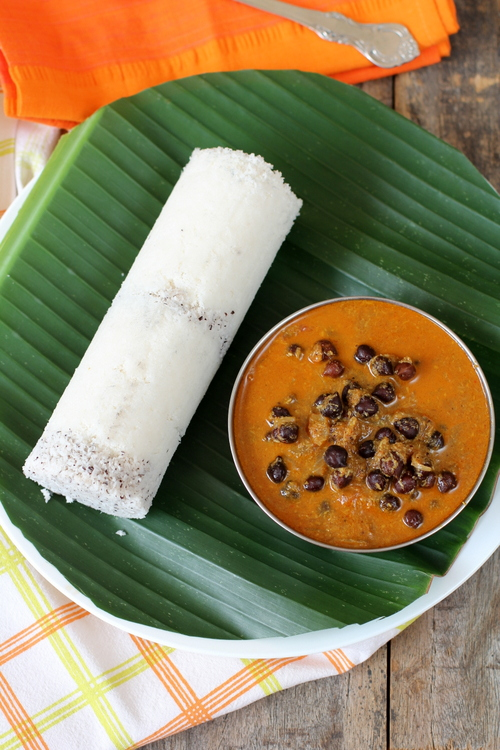

Puttu Recipe

Description
The puttu is a very famous Kerala dish that is basically steamed rice flour sandwiched by shredded coconut. It is made is a special vessel thst is shaped as a cylinder. Other flour types also may be used, such as wheat, sooji etc.
Ingredients
- Puttu flour
- Salt
- Water
- Coconut(shredded)
Steps
- Take the Puttu flour into a bowl.
- Add salt as required.
- Add water and mix with your fingers till the flour forms lumps.
- Break all the lumps and make the mix even.
- Boil 2-3 cups of water in a puttu kodam(vessel).
- Keep the perforated disk inside the cylinder and add an even layer of shredded coconut over it.
- Fill the cylinder upto half with the mixed flour.
- Add one more layer of the shredded coconut. Make sure it is even.
- Fill the flour upto the brim and add a final layer of coconut.
- Close the vessel and keep it on top of the puttu kodam, which must be boiling by now.
- Let it cook on a medium flame till the whistle comes. Then remove the puttu from the vessel with the help of a stick.
- Serve on a plate with hot Kadala Curry!